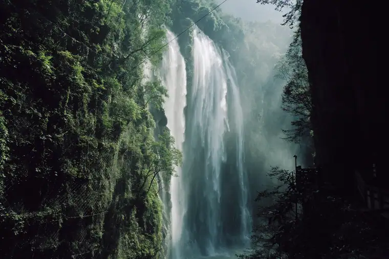
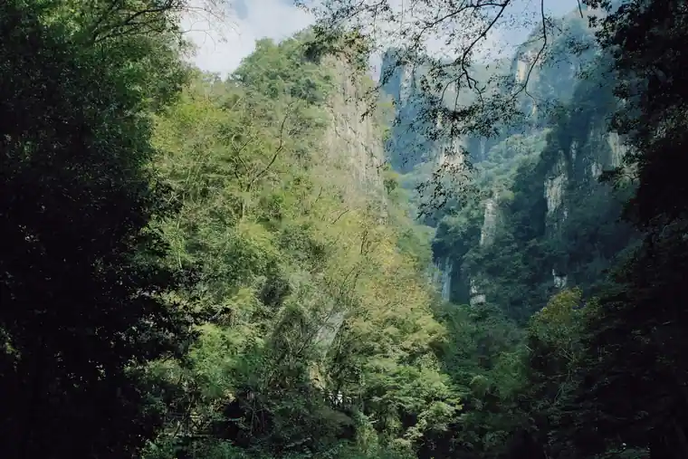
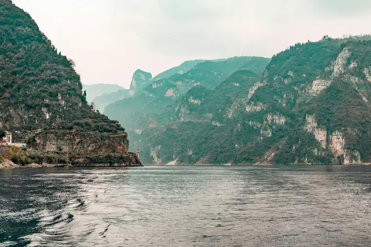

Yichang Airport Transfer & Private Car
Licensed professional driver in the Three Gorges Dam city and Yangtze River gateway. Fixed price. Explore the world's largest hydroelectric dam, the legendary Three Gorges, and the ancient Shennongjia forest with a private car and driver.
Yichang in Pictures
Real scenes from Yichang — landmarks, streets and everyday life.



Yichang at a Glance
Yichang (宜昌) — "Yi's Settlement" or "Prosperous for All" — is a prefecture-level city in western Hubei Province, at the eastern edge of the Three Gorges (三峡) area on the Yangtze River. Yichang is best known as the gateway to the Three Gorges Dam (三峡大坝) — the world's largest hydroelectric dam — and as the departure point for Yangtze River cruises through the spectacular Three Gorges (Qutang, Wu, and Xiling Gorges). The nearby Shennongjia (神农架) forest area is known for its primitive forest, biodiversity, and legendary 'Wild Man' sightings.
The Three Gorges Dam — World's Largest Hydroelectric Project
Yichang's most famous landmark is the Three Gorges Dam (三峡大坝) — the world's largest hydroelectric power station and dam — spanning the Yangtze River approximately 40km upstream from Yichang city. The dam — 2,335 meters long and 185 meters high — created a reservoir that extended 660km upstream, flooding the famous Three Gorges and displacing over 1 million people. The dam's 32 main turbines generate approximately 22,500 megawatts of electricity, making it the largest power station in the world by installed capacity.
The dam is a source of both national pride and significant controversy — its environmental impact, the displacement of communities, and its role in flood control and navigation are subjects of ongoing debate. The Three Gorges Dam viewing area (三峡大坝坛子岭景区) — with its panoramic views of the dam structure, the ship lock system, and the Yangtze — is one of Yichang's most visited attractions.
Name Origin
The name Yichang (宜昌) — "Yi's Settlement" or "Prosperous for All" — was first recorded during the Yongning period of the Sui Dynasty (685–688 CE). The character the city's favorable location at the confluence of the Yangtze River and several tributaries — a natural hub for river transportation and trade between the Sichuan Basin and the middle Yangtze region. The name has been in continuous use for over 1,300 years.
The Three Gorges — Qutang, Wu, and Xiling
Yichang is the primary departure point for Yangtze River cruises through the legendary Three Gorges (三峡) — Qutang (瞿塘峡), Wu (巫峡), and Xiling (西陵峡). These three spectacular canyons — with their towering cliffs, fast-flowing waters, and dramatic scenery — have been celebrated in Chinese poetry and art for over a thousand years. The gorges are most impressive experienced by river cruise, sailing upstream from Yichang through the dramatic canyon landscape.
The Three Gorges area — including the Three Gorges Dam itself — was inscribed as a UNESCO World Heritage Site in 2007. The Three Gorges Dam's creation of the reservoir (the "Three Gorges Reservoir," 三峡水库) raised water levels by up to 175m, flooding some of the most dramatic gorges but also creating new views and access to areas previously inaccessible by boat.
Geography & Location
Yichang is located in western Hubei Province, at the point where the Yangtze River leaves the Three Gorges area and enters the more open terrain of central China. The city sits at the confluence of the Yangtze River (长江) and the River Han (汉江) — though the main Han confluence is further downstream near Wuhan. The surrounding landscape is dramatic — karst hills, Three Gorges canyon scenery, and the beginning of the mountainous transition between the Sichuan Basin and the central Yangtze plain. Yichang is approximately 300km from Wuhan (Hubei's capital).
Top yichang Attractions
Visit the Three Gorges Dam, Gezhouba Dam, Xiling Gorge, Chexi Folk Scenic Area, and Yichang Museum.
Popular Yichang Routes
Fixed-price private car service for Yichang's most popular journeys.
⛰️ Three Gorges Dam Half-Day Tour
From ¥240($33.8)~40 km · 1 hr drive · 4–5 hours · Business vehicle
Your driver takes you to the Three Gorges Dam viewing area (坛子岭景区) — approximately 40km from Yichang — for a half-day visit to the world's largest hydroelectric dam. The tour includes the viewing platform with panoramic dam views, the ship lock system, and the visitor center. Your driver waits while you explore. Best visited in the morning to see the dam in good light and potentially see ships passing through the locks.
⛰️ Three Gorges Cruise (Multi-Day)
From ¥240($33.8)Yichang port departure · 2–4 days · Yangtze cruise
Your driver transfers you to Yichang's Yangtze cruise port for a multi-day cruise upstream through all three gorges — Qutang, Wu, and Xiling — to Chongqing or Fengdu. Standard cruise itineraries include shore excursions to the Three Little Gorges, Shennongjia, or Fengdu. Your driver can also arrange the pre-cruise hotel night in Yichang and the post-cruise Chongqing transfer.
🛕 Shennongjia Primeval Forest Day Trip
From ¥240($33.8)~200 km · 3 hr drive · Full day · Business vehicle
Your driver takes you to Shennongjia (神农架) — approximately 200km from Yichang (3 hours by car) — for a full day exploring the UNESCO World Heritage primeval forest. The typical itinerary includes the Monkey Valley (金丝猴谷) monkey reserve, the Shennongding (神农顶) scenic area, and the forest hiking trails. This is a long day but rewarding for nature lovers.
🍵 Yichang Airport → City Center
From ¥240($33.8)~20 km · 35 min · Economy/Business/MPV
Yichang Sanxia Airport (YXC) is approximately 20km from the city center (35 minutes by car). Your driver meets you at the airport arrival hall with a name board and drives you directly to your Yichang hotel or to the Three Gorges Dam direction.
Transparent Pricing in Yichang
Published rates, no estimate games. Check the numbers yourself before you book — and the price you see is the price your driver is paid from.
Fixed Price List — 宜昌 (Yichang)
Published rates from our 2026 quote sheet. Renminbi first, USD for reference at 1 USD = ¥7.10. Every price below already includes tolls, parking, driver service and free airport waiting time (up to 60 minutes after your flight lands) — nothing is added on the day.
🛬 Airport & Intercity Transfer
One flat fare for airport pickup, drop-off or city-to-city — intercity costs the same as the airport run. 35 km and 60 minutes included; beyond that we charge by the minute and the kilometre at the rates shown.
| Vehicle | Seats | Bags | Fixed fare | USD | Beyond 35 km / 60 min |
|---|---|---|---|---|---|
| 4座 经济型专车 | 4 | 2 | ¥240 | ≈ $33.8 | ¥1.22/min · ¥5.41/km |
| 4座 舒适型专车 | 4 | 2 | ¥343 | ≈ $48.31 | ¥1.34/min · ¥5.99/km |
| 6座 商务车 | 6 | 3 | ¥430 | ≈ $60.56 | ¥1.43/min · ¥6.37/km |
| 8-11座 商务车 | 11 | 4 | ¥749 | ≈ $105.49 | ¥1.86/min · ¥8.28/km |
| 12-18座 商务车 | 18 | 4 | ¥796 | ≈ $112.11 | ¥2.07/min · ¥9.24/km |
| 19-55座 大巴 | 55 | 5 | ¥905 | ≈ $127.46 | ¥2.36/min · ¥10.51/km |
🚗 Hourly Private Charter
Book the car and the hours, keep the car for the day. Unused kilometres can be carried into the next tier, so a long day never turns into a penalty. The driver stays with you — you set the stops.
| Vehicle | 2h / 35km | 4h / 50km | 6h / 75km | 8h / 100km | 10h / 125km |
|---|---|---|---|---|---|
| 4座 专车 | ¥286 | ¥468 | ¥624 | ¥663 | ¥754 |
| 6座 商务车 | ¥377 | ¥611 | ¥806 | ¥858 | ¥975 |
| 8-11座 商务车 | ¥543 | ¥880 | ¥1161 | ¥1236 | ¥1404 |
| 12-18座 商务车 | ¥651 | ¥1056 | ¥1393 | ¥1483 | ¥1685 |
| 19-55座 大巴 | ¥782 | ¥1267 | ¥1671 | ¥1779 | ¥2022 |
Why travellers book Yichang with Chinawheely
Six things you get with every booking — in Yichang and across all 346 cities on the platform.
Licensed travel agency, not a ride-hail app
Chinawheely is a registered travel agency (L-HUB-101603). Your booking is a travel contract with a licensed operator — not a broker handing your number to whoever answers the phone.
One locked price, shown before you pay
The price you see is the price you pay. Tolls, parking, driver service and airport waiting time are already inside it. No surge pricing, no meter, no cash-on-the-day surprise.
Flight tracked, waiting time on us
We watch your flight number in real time. If it lands late or is delayed, your driver shifts with it and the waiting time stays on us — not on your bill.
A licensed driver who knows the city
Every car is driven by a professional local driver who knows the routes, the shortcuts and the parking that actually works near the attractions — with English communication and a name board on arrival.
Free changes up to 48 hours before
Plans move. Reschedule or cancel any booking free of charge up to 48 hours before your scheduled pickup, straight from your confirmation link.
A real human on WhatsApp, 8AM–12AM Beijing time
One message reaches a person who can re-price, re-route or re-plan your trip on the spot. No ticket queue, no chatbot loop.
Book Yichang at the published price
Pick your vehicle, see the fare line by line, and pay by PayPal or Alipay. Free changes up to 48 hours before pickup — or ask on WhatsApp and we will hold a car for you.
The quote is valid for 48 hours, and you can change or cancel free up to 48 hours before pickup.
Getting to Yichang: Airports & Railway Stations
Getting to Yichang by air, rail, or road
🚄 Yichang Railway Stations
🗼 Yichang East Railway Station (宜昌东站)
High-speed rail hub · Shanghai–Wuhan–Chengdu corridor
Yichang East Railway Station (宜昌东站) is on the Shanghai–Wuhan–Chengdu high-speed rail corridor, with frequent high-speed services to Wuhan (2 hours), Shanghai (5 hours), Chengdu (4.5 hours), Chongqing (3 hours), and Beijing (5 hours). The station is the main arrival point for high-speed rail visitors. Yichang's old railway station (宜昌站) serves standard rail services on the Shanghai–Rongcheng line.
✈️ Yichang Sanxia Airport
🍵 Yichang Sanxia Airport (YXC)
~20 km · 35 min drive
Yichang Sanxia Airport (YXC) — also called Yichang Three Gorges Airport — is approximately 20km from the city center (35 minutes by car). The airport has flights to major Chinese cities including Beijing (2 hours), Shanghai (2 hours), Guangzhou (1.5 hours), Chengdu (1 hour), Wuhan (45 minutes), and Chongqing (1 hour). This is the most common arrival point for visitors to Yichang. Your driver meets you at the airport arrival hall with a name board.
🦅 Wuhan Tianhe International Airport (WUH)
~300 km · 3.5 hr drive
Wuhan Tianhe International Airport (WUH) — Hubei Province's main international hub — is approximately 300km from Yichang. Most international visitors fly to Wuhan first, then take the high-speed rail (2 hours) or private car (3.5 hours) to Yichang. The high-speed rail from Wuhan to Yichang is the most practical option for most visitors.
🛶 Chongqing Jiangbei International Airport (CKG)
~350 km · 4 hr drive
Chongqing Jiangbei International Airport (CKG) — in the upstream Yangtze city — is approximately 350km from Yichang (4 hours by car). Many visitors combine Yichang with a Chongqing visit — taking the Three Gorges cruise downstream from Chongqing to Yichang, or arriving in Yichang and continuing overland to Chongqing. A private car is the most comfortable option for this intercity journey.
Yichang's Best Photo Spots
The places in Yichang worth stopping for — and a car that waits while you take the shot.
📍 Three Gorges Dam
Best at sunrise
Three Gorges Dam is one of Yichang's signature sights and a natural place to stop for a photo. Your driver drops you at the entrance, waits while you shoot, and takes you on to the next stop in the same area.
📍 Gezhouba Dam
Best in the late afternoon
Gezhouba Dam is one of Yichang's signature sights and a natural place to stop for a photo. Your driver drops you at the entrance, waits while you shoot, and takes you on to the next stop in the same area.
📍 Xiling Gorge
Best at dusk
Xiling Gorge is one of Yichang's signature sights and a natural place to stop for a photo. Your driver drops you at the entrance, waits while you shoot, and takes you on to the next stop in the same area.
📍 Chexi Folk Scenic Area
Best in soft morning light
Chexi Folk Scenic Area is one of Yichang's signature sights and a natural place to stop for a photo. Your driver drops you at the entrance, waits while you shoot, and takes you on to the next stop in the same area.
Food & Shopping in Yichang
🍜 Must-Try Yichang & Three Gorges Cuisine
Three Gorges Freshwater Fish (三峡鲜鱼)
The freshwater fish from the Yangtze River and Three Gorges Reservoir — including carp, grass carp, and catfish — are among the finest freshwater fish in China. The Three Gorges area's signature preparation is steamed fish (清蒸) with ginger, scallion, and soy sauce — letting the freshness of the river fish speak for itself. Found at riverside restaurants throughout Yichang and along the Three Gorges cruise route.
Spicy River Crayfish (香辣小龙虾)
The river crayfish (小龙虾) from the Yangtze system — prepared in the spicy stir-fry style with abundant dried chili, Sichuan pepper, and garlic — is a beloved seasonal dish throughout the Three Gorges area. The crayfish season runs from April to September. The Yichang riverside restaurants serve excellent spicy crayfish during the season — best eaten with cold beer on a warm evening.
Tujia Sticky Rice Cakes (土家糍粑)
The Tujia ethnic minority (土家族) — a significant population in the Three Gorges area — has its own culinary traditions including Tujia sticky rice cakes (糍粑, cí bā) — pounded glutinous rice cakes often served grilled or fried with sweet or savory toppings. Found at Tujia village restaurants near Yichang and along the Three Gorges cruise shore excursions.
River Ferns & Mountain Vegetables (山珍野菜)
The mountain vegetables and river ferns (山珍野菜) from the Three Gorges area — including wild ferns (蕨菜), wild mushrooms, and other seasonal forest vegetables — are a distinctive part of the local cuisine. Prepared in the local stir-fry style with garlic and chili, or in a clear soup that lets the vegetable flavors speak for themselves. Seasonal (best in spring and early summer). Found at traditional restaurants near Shennongjia.
Yangtze Three Gorges Tea (三峡茶)
The Three Gorges tea (三峡茶) — green tea grown in the karst mountain tea gardens of the Three Gorges area — has a distinctive fresh, slightly sweet flavor from the unique microclimate of the canyon area. The tea is produced by small family tea farms in the surrounding mountains and sold at tea shops in Yichang. Traditional tea shops offer the opportunity to sample these teas.
🛍️ Shopping Destinations
Three Gorges Dam Souvenir Market
At the Three Gorges Dam viewing area, the souvenir market sells local products from the Three Gorges area — including miniature dam models, Three Gorges-themed crafts, local agricultural products, and Tujia and Miao ethnic minority crafts. The best products are the miniature dam models and the local tea. Buy from established stalls for quality items.
Yichang Riverside Commercial District
The Yichang Riverside Commercial District — along the Yangtze waterfront — is the city's main commercial area with a mix of local brands, national chains, and traditional shops. The area has a range of products including clothing, electronics, and local specialties. The riverside setting makes for a pleasant shopping environment with river views.
🎁 What to Buy in Yichang
Three Gorges Dam Scale Models
Miniature Three Gorges Dam scale models — detailed replicas of the dam in various sizes — are sold at the dam viewing area souvenir shops. The best quality models are crafted from metal or high-quality resin and make striking display pieces. Buy from established shops at the dam viewing area for the best quality.
Three Gorges Tea (三峡茶)
Three Gorges tea (三峡茶) — green tea from the karst mountain tea gardens of the Three Gorges area — is sold at tea specialty shops throughout Yichang. The tea has a distinctive fresh, slightly sweet flavor characteristic of the canyon microclimate. Buy from established tea shops where you can sample before purchasing. The spring harvest (明前茶, before the Qingming festival) is the highest quality.
Tujia & Miao Ethnic Minority Crafts
The Tujia (土家族) and Miao (苗族) ethnic minorities in the Three Gorges area produce distinctive crafts — including embroidered textiles, silver ornaments, and traditional woven items. These are available at specialty handicraft shops in Yichang and at Tujia village craft shops along the Three Gorges cruise shore excursions. The best quality is found at the village craft workshops.
Intangible Cultural Heritage & Living Crafts of Yichang
Traditional crafts and cultural traditions of China's Three Gorges Dam city.
⛵ Traditional Yangtze River Navigation (长江纤夫文化)
The traditional craft of Yangtze River tracking (纤夫, qiàn fū) — the men who pulled cargo boats upstream along the river by walking along the shore with ropes — was one of the most physically demanding traditional occupations in China. The trackers walked barefoot along the rocky riverbank, pulling boats against the powerful current. This tradition — which shaped the culture and social life of the Three Gorges communities for centuries — was dramatically impacted by the Three Gorges Dam, which raised water levels and made most tracking routes obsolete. The tradition is documented in the Yichang Museum and commemorated in the Three Little Gorges scenic area.
Where to see: Yichang Museum, Three Little Gorges scenic area performances.
🥻 Tujia Brocade & Embroidery (土家锦绣)
Tujia brocade (土家锦, tǔ jiā jǐn) — also known as "dragon and phoenix brocade" (龙凤锦) — is one of China's most distinctive regional weaving traditions, practiced by the Tujia people in the Three Gorges area. The brocade is characterized by its bold geometric patterns, its use of bright colors (particularly red, yellow, green, and blue), and its distinctive weaving technique that creates patterns on both sides of the fabric. Tujia women traditionally wove brocade for ceremonial clothing and household items. The craft is still practiced in Tujia villages near Yichang.
Where to find: Tujia village craft shops, Yichang handicraft markets.
🎭 Tujia Golden Theatre & Folk Songs (土家山歌)
The Tujia folk song tradition (土家山歌, tǔ jiā shān gē) — group singing in the Tujia language with distinctive polyphonic harmonies — is an important part of Tujia cultural identity in the Three Gorges area. The songs cover topics from daily life to historical narratives and love stories. The Tujia Golden Theatre (土家金剧院) in Yichang stages performances of Tujia folk songs and dances for visitors. The songs are most authentic when performed by Tujia villagers in their own communities.
Where to see: Tujia Golden Theatre, Yichang Cultural Center, Tujia village festivals.
🍜 Three Gorges Fishing Culture & River Fish Cuisine
The traditional Yangtze River fishing culture (渔文化) — with its distinctive net-fishing techniques, fish preparation methods, and river fish cuisine traditions — has been practiced by communities along the Yangtze for millennia. The Three Gorges Dam's creation of the reservoir dramatically impacted traditional fishing — raising water levels and changing fish habitats — but the culinary traditions continue in Yichang's riverside restaurants. The craft of selecting, preparing, and cooking the day's catch is a living tradition in the city's restaurant culture.
Where to experience: Yichang riverside restaurants, Three Gorges cruise ship dining.
🏗️ Three Gorges Dam Engineering Heritage
The engineering knowledge and techniques used to build the Three Gorges Dam — including the concrete technology, the turbine engineering, the lock system design, and the reservoir management — represent a significant body of modern engineering heritage. The dam's construction involved solving unprecedented technical challenges — including how to divert the Yangtze's massive flow during construction, how to place the enormous concrete sections, and how to operate the world's largest ship lock system. This knowledge is documented in the Three Gorges Dam visitor center and by the engineering institutions involved in the project.
Where to learn: Three Gorges Dam visitor center.
🌲 Shennongjia Forest Ecological Knowledge
The traditional ecological knowledge of the Shennongjia forest — including which plants have medicinal properties, which forest areas are sacred or protected, and which animal species inhabit which altitudes — is a significant body of traditional knowledge developed over centuries by the local communities. This knowledge — combined with modern scientific research — forms the basis of the Shennongjia nature reserve's management. The "Wild Man" (野人) legend — reported in Shennongjia for centuries — is part of the cultural heritage of the forest, even if the creature remains unconfirmed by science.
Where to learn: Shennongjia Nature Reserve visitor center.
Yichang Local Secrets
Insider tips to help you experience Yichang like a local.
Go to the Dam in the Morning During Flood Season
The Three Gorges Dam spillway gates are most likely to be open during the flood season (July–September) when the Yangtze water levels are highest. The sight of water pouring through the spillway gates — creating massive water curtains and thundering sounds — is dramatically more impressive than the dam at normal water levels. Your driver can time the visit to be at the viewing platform when the spillway is in operation.
Take the Day Cruise Instead of the Multi-Day
Multi-day Three Gorges cruises are expensive and time-consuming. The day cruise from Yichang — sailing upstream through Xiling Gorge and the Three Little Gorges — captures the essence of the Three Gorges experience at a fraction of the cost and time. The day cruise includes the dramatic Xiling Gorge, the Three Little Gorges tributary boat trip, and the return to Yichang in the evening. This is the best option for visitors with limited time.
Look for Monkeys at Shennongjia at Dawn
The golden snub-nosed monkeys at Shennongjia are most active and visible in the early morning (7–9 AM). Plan to arrive at the Shennongjia Monkey Valley (金丝猴谷) at opening time (around 8 AM) for the best chance of seeing the monkeys. During the middle of the day, they retreat into the dense forest canopy. An early start from Yichang — leaving at 5 AM — is required for this, but it maximizes your wildlife viewing chances.
Eat River Fish at the Riverside at Sunset
The Yangtze River riverside restaurants in Yichang — outdoor establishments along the riverbank serving fresh river fish — are at their best at sunset when the river views are most dramatic and the evening breeze provides relief from the summer heat. Arrive around 5:30 PM to secure a good riverside table. The signature dish is steamed freshwater fish (清蒸鲜鱼) from the Three Gorges Reservoir, best eaten with cold beer.
Visit the Museum Before the Dam
The Yichang Museum (宜昌博物馆) provides essential context for understanding the Three Gorges area — its history, the Ba culture, the Three Gorges before the dam, and the cultural impact of the dam construction. A visit to the museum before going to the Three Gorges Dam gives you a much richer understanding of what you're seeing. The museum is free entry and takes 1–2 hours.
Try the Spicy River Crayfish in Season
If you're visiting Yichang between April and September, the spicy river crayfish (香辣小龙虾) from the Yangtze is a seasonal treat not to be missed. The crayfish are prepared in the spicy stir-fry style with abundant dried chili, Sichuan pepper, and garlic — messy to eat but absolutely delicious. The Yichang riverside restaurants serve the best version, with the crayfish arriving at your table still steaming hot.
Day Trips from Yichang
Real destinations around Yichang, reached comfortably with a private car and a licensed professional driver.
Best Time to Visit Yichang
The climate record of Yichang decides when the city is at its most comfortable to walk.
The annual average temperature is 17.1 °C; annual rainfall averages 1,161 mm; July is the hottest month at 27.7 °C; January the coldest at 5 °C; The climate pattern includes The monsoon.
Spring
Monthly means in March, April, May run 11–22 °C. Rainfall over those three months totals about 269 mm.
Summer
Monthly means in June, July, August run 26–28 °C. Rainfall over those three months totals about 564 mm.
Autumn
Monthly means in September, October, November run 13–24 °C. Rainfall over those three months totals about 245 mm.
Winter
Monthly means in December, January, February run 5–7 °C. Rainfall over those three months totals about 82 mm.
Useful Chinese Phrases for Yichang
A few words for China's Three Gorges city.
👋 Nǐ hǎo
你好
Hello — The universal greeting.
🙏 Xièxiè
谢谢
Thank you — Locals appreciate the effort.
🏗️ Wǒ yào qù sānxiá dàbà
我要去三峡大坝
I want to go to the Three Gorges Dam — Tell your driver you'd like to visit the world's largest dam.
⛵ Wǒ yào zuò sānxiá yóulún
我要坐三峡游轮
I want to take a Three Gorges cruise — Tell your driver you'd like to arrange a Yangtze cruise.
🌊 Wǒ yào chī xiānyú
我要吃鲜鱼
I want to eat fresh fish — Tell the restaurant you want the signature Three Gorges freshwater fish.
💰 Duōshao qián?
多少钱？
How much is this? — Essential for the dam souvenir markets and riverside restaurants.
Book Your Yichang Transfer
Fixed price, licensed professional driver. From Yichang Airport or Railway Station to the Three Gorges Dam, Yangtze cruise, and Shennongjia forest.
Get Instant QuoteQuestions? WhatsApp +86-155-2777-1775
Travel Essentials for Your Yichang Trip
Make your Yichang Three Gorges and dam journey smoother with these services.
Mobile Pocket Wi-Fi
Stay connected across Hubei with a pocket Wi-Fi device. Pre-book online and pick up at Wuhan Airport or Yichang Airport, or have it delivered to your Yichang hotel. Wi-Fi is essential for navigation on the Three Gorges cruise.
Book Wi-Fi at ChinaWiFiGoEnglish-Speaking Guide
Explore the Three Gorges Dam and Shennongjia with a professional English-speaking guide who knows the dam's engineering, the gorges' history, and the forest's biodiversity.
Book Guide at VIPChinaGuideMedical Services
Add a health checkup, dental cleaning, or traditional Chinese medicine session to your Yichang trip. Wuhan has excellent international-standard medical services, about 3.5 hours from Yichang.
Book Medical at MediEscortChinaMore China destinations
Compare routes, published prices and local driver tips across the cities we cover.